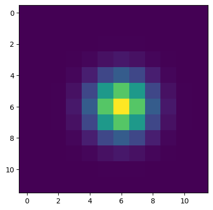

from pixell import enmap, utils, resample, curvedsky as cs, reproject, pointsrcs
import numpy as np
import healpy as hpTesting the pixell sim_objects functionality to create maps of point sources pre-smoothed with a gaussian beam. The purpose is to include this functionality in PySM to be able to generate on the fly maps of source starting from a catalog.
fwhm = 5 * utils.degreeshape, wcs = enmap.fullsky_geometry(res=fwhm / 3, proj="car")shape(109, 216)def fwhm2sigma(fwhm):
return fwhm / (2.0 * np.sqrt(2.0 * np.log(2.0)))def flux2amp(flux, fwhm):
sigma = fwhm2sigma(fwhm)
return flux / (2 * np.pi * sigma**2)assert flux2amp((2 * np.pi * fwhm2sigma(5) ** 2), 5) == 1n_sources = 1
flux_sources = np.arange(n_sources) + 10amplitude_sources = flux2amp(flux_sources, fwhm)source_pos = np.array([[0], [np.pi / 3]])r, p = pointsrcs.expand_beam(fwhm2sigma(fwhm))source_map = pointsrcs.sim_objects(shape, wcs, source_pos, amplitude_sources, ((r, p)))import matplotlib.pyplot as pltsource_posarray([[0. ],
[1.04719755]])plt.imshow(source_map)
source_map.argmax(unit="coord")array([0. , 1.04719755])source_map.argmax(unit="pix")array([54, 72])source_pos[:, -1]array([0. , 1.04719755])-source_map.argmax(unit="coord") + source_pos[:, -1]array([ 0.00000000e+00, -6.66133815e-16])source_map.max()array(1158.8864, dtype=float32)source_map.min()array(0., dtype=float32)def aperture_photometry(
thumbs, aperture_radius, annulus_width=None, modrmap=None, pixsizemap=None
):
"""
Flux from aperture photometry.
from https://github.com/msyriac/orphics/blob/master/orphics/maps.py
Parameters
----------
thumb : ndmap
An (...,Ny,Nx) ndmap (i.e. a pixell enmap) containing the thumbnails.
aperture_radius : float
Aperture inner radius in radians
annulus_width : float
Annulus width for mean subtraction in radians.
Defaults to sqrt(2)-1 times the aperture inner radius.
modrmap : ndmap, optional
An (Ny,Nx) ndmap containing distances of each pixel from the center in radians.
modrmap : ndmap, optional
An (Ny,Nx) ndmap containing pixel areas in steradians.
Returns
-------
flux : ndarray
(...,) array of aperture photometry fluxes.
"""
if modrmap is None:
modrmap = thumbs.modrmap()
if annulus_width is None:
annulus_width = (np.sqrt(2.0) - 1.0) * aperture_radius
# Get the mean background level from the annulus
mean = thumbs[
...,
np.logical_and(
modrmap > aperture_radius, modrmap < (aperture_radius + annulus_width)
),
].mean()
if pixsizemap is None:
pixsizemap = thumbs.pixsizemap()
# Subtract the mean, multiply by pixel areas and sum
return (((thumbs - mean) * pixsizemap)[..., modrmap <= aperture_radius]).sum(
axis=-1
)from astropy import units as ubox_half_size_rad = 2 * fwhm
box_center = [source_pos[0, -1], source_pos[1, -1]]
box = np.array(
[
[box_center[0] - box_half_size_rad, box_center[1] - box_half_size_rad],
[box_center[0] + box_half_size_rad, box_center[1] + box_half_size_rad],
]
) # in radiansbox_center[0.0, 1.0471975511965976]cutout = source_map.submap(box)cutout.max()array(1158.8864, dtype=float32)cutout.min()array(0., dtype=float32)plt.imshow(cutout)
aperture_photometry(cutout, 2 * fwhm)9.99300220192394